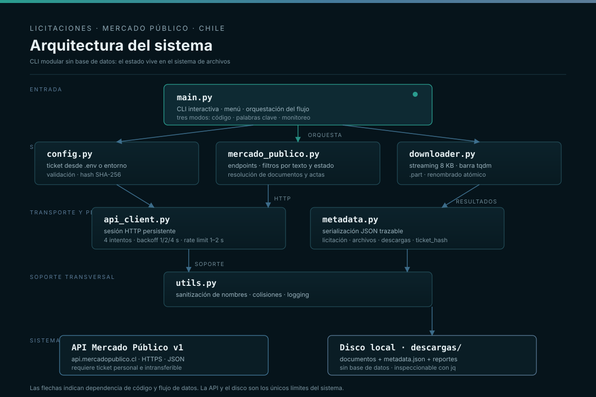

El mercado público.
Monitoreado.
Tres modos para encontrar licitaciones: por código, por palabras clave o cada 30 minutos.

Qué es y por qué existe
Herramienta de línea de comandos para consultar y monitorear licitaciones del Mercado Público chileno mediante su API oficial. Permite buscar por código, filtrar por palabras clave y ejecutar un monitoreo periódico que recuerda los procesos ya vistos. Descarga los documentos adjuntos con reintentos, nombres saneados y metadatos que incluyen el hash del ticket.
Está pensada para pymes, consultoras y analistas que siguen oportunidades sin pagar un servicio de alertas. Su aporte es el manejo cuidadoso de una API restrictiva: valida el cuerpo además del código HTTP, respeta el rate limit y escribe los archivos de forma atómica. El README expone con claridad las limitaciones de la versión 1 de la API, en especial la ausencia de búsqueda textual y de paginación histórica.
Documentación preservada
El README original, completo y en su contexto.
Herramienta de línea de comandos para buscar, descargar y monitorear licitaciones del Mercado Público de Chile mediante la API oficial (api.mercadopublico.cl). Automatiza tres flujos que normalmente se hacen a mano en el portal: consulta por código, búsqueda por palabras clave y vigilancia periódica cada 30 minutos.
Todo lo descargado se organiza por código de licitación y se acompaña de un metadata.json con la respuesta completa de la API, el estado de cada archivo y la trazabilidad del proceso.
Tabla de contenidos
- 1. El problema
- 2. Qué hace este programa
- 3. Los tres modos
- 3.1 Búsqueda por código
- 3.2 Búsqueda por palabras clave
- 3.3 Monitoreo cada 30 minutos
- 3.4 Comparativa
- 4. Arquitectura
- 5. La API de Mercado Público
- 5.1 Autenticación
- 5.2 Endpoints
- 5.3 Respuesta
- 5.4 Campos principales
- 5.5 Estados
- 5.6 Tipos de licitación
- 5.7 Límites de la API v1
- 6. Requisitos e instalación
- 7. Configuración del ticket
- 8. Uso
- 9. Ejemplos de uso
- 10. Programación de ejecuciones
- 11. Estructura del proyecto
- 12. Salida y metadata.json
- 13. Funcionamiento interno
- 14. Límites y riesgos
- 15. Solución de problemas
- 16. Seguridad
- 17. Advertencias
- 18. Documentación adicional
- 19. Contribuir
- 20. Licencia
1. El problema
El Mercado Público chileno publica miles de procesos de compra al año. Revisarlos manualmente implica abrir ficha por ficha, comparar nombres y descripciones, descargar bases y anexos, y repetir el ciclo cada día. Los problemas concretos:
- Volumen: las oportunidades relevantes se pierden entre cientos de procesos de otras categorías.
- Oportunidad: una licitación puede pasar de Publicada a Cerrada en pocos días; enterarse tarde equivale a perderla.
- Documentación dispersa: bases, anexos y actas viven en enlaces distintos dentro de cada ficha.
- Trabajo repetitivo: descargar, renombrar y archivar PDFs es manual y propenso a errores.
- Sin historial local: el portal no está pensado para que un tercero acumule y compare oportunidades.
Este proyecto ataca esos puntos con una interfaz de terminal: consulta la API oficial, filtra localmente, descarga documentos y deja un registro estructurado. No usa navegador, no hace scraping del HTML y no guarda credenciales en claro. Es una herramienta de vigilancia de oportunidades, no de participación automática: la decisión de ofertar sigue siendo humana.
2. Qué hace este programa
| Capacidad | Detalle |
|---|---|
| Consulta individual | Metadatos completos de una licitación por su código externo |
| Búsqueda local | Filtra el listado reciente por coincidencia en nombre y descripción |
| Filtro por estado | Solo vigentes (CodigoEstado == 5) o todos los estados |
| Documentos | Resuelve el acta de adjudicación y el endpoint de archivos si existe |
| Descarga con progreso | Streaming en bloques de 8 KB con barra tqdm |
| Descarga atómica | Escribe .part y renombra al finalizar |
| Reintentos | Backoff exponencial y espera especial ante HTTP 429 |
| Control de tasa | Pausas de 1 a 2 segundos con jitter entre peticiones |
| Nombres seguros | Sanitización multiplataforma y resolución de colisiones |
| Metadatos | metadata.json con la API completa y el estado de cada descarga |
| Monitoreo | Ciclos de 30 minutos con memoria de códigos vistos |
| Privacidad | Solo se persiste un hash SHA-256 del ticket |
Lo que no hace: no firma documentos, no envía ofertas, no automatiza la participación, no evade autenticación y no accede a datos que la API no exponga con un ticket válido.
3. Los tres modos
Al ejecutar python main.py aparece el menú:
══════════════════════════════════════════════════════════
MENÚ PRINCIPAL
══════════════════════════════════════════════════════════
1. Buscar licitación por código
2. Buscar licitaciones por palabras clave
3. Modo monitoreo cada 30 min (terminos fijos)
0. Salir
──────────────────────────────────────────────────────────
Opción:
3.1 Búsqueda por código
Flujo directo cuando se conoce el código externo (por ejemplo 1234567-8-LP24):
- Pide el código y normaliza la entrada: quita espacios, convierte guiones tipográficos (
—,–,−) en-y colapsa guiones repetidos. - Rechaza códigos con
/,\o..para evitar rutas maliciosas. - Consulta
GET /licitaciones.json?codigo=...&ticket=.... - Extrae
Listado[0]y muestra código, nombre, organismo, estado, tipo, fechas, monto y descripción. - Pregunta si se descargan los documentos.
- Consulta el acta de adjudicación (si existe) y
/licitaciones/{codigo}/Archivos.json. - Descarga con barra de progreso, guarda
metadata.jsony resume el resultado.
────────────────────────────────────────────────────────────
Código : 1234567-8-LP24
Nombre : Construcción Centro Comunitario
Organismo : Municipalidad de Providencia
Estado : Publicada
Tipo : LP
Publicación : 2026-05-01T10:00:00
Cierre : 2026-06-30T15:00:00
Monto estimado : $ 150,000,000
────────────────────────────────────────────────────────────
Ventaja: es el camino más rápido ante un código conocido. Limitación: no sirve para descubrir oportunidades.
3.2 Búsqueda por palabras clave
La API v1 no ofrece búsqueda por texto, así que el programa descarga el listado reciente y filtra localmente:
- Pide términos separados por comas (
telemetria, iot, monitoreo, sensores). - Pregunta si se limita a vigentes o incluye todos los estados.
- Obtiene
GET /licitaciones.json?ticket=.... - Descarta lo que no tenga
CodigoEstado == 5si se eligió "solo vigentes". - Compara cada término en minúsculas contra
NombreyDescripcion. - Muestra resultados numerados; al elegir uno, consulta el detalle y ofrece descargar.
Términos (vacío = todas las vigentes): telemetria, iot, sensor
¿Solo licitaciones vigentes? [S/n]: s
Se encontraron 3 licitación(es):
────────────────────────────────────────────────────────────
1. [1234-5-LP26] Adquisición de sensores de temperatura y humedad
2. [5678-9-LQ26] Sistema de monitoreo IoT para cuencas hídricas
3. [9012-3-LP26] Plataforma de telemetría para redes de riego
────────────────────────────────────────────────────────────
Selecciona una licitación (1-3): 2
Buenos términos son sustantivos genéricos (sensor, medicion, red), tecnología (iot, telemetria, software), dominio (riego, agua, energia) o acciones (monitoreo, reporte, alerta). Las siglas raras reducen demasiado el universo. Como el listado puede no incluir la descripción completa, conviene usar términos amplios y revisar los resultados.
3.3 Monitoreo cada 30 minutos
Vigilancia continua pensada para dejarla corriendo en una terminal, tmux/screen o un servicio.
Términos fijos por defecto:
telemetria, monitor, monitoreo, medicion, sensores, riego, software,
alerta, reporte, iot, domotica, notificacion, temperatura, humedad,
presion, frio
Ciclo:
- Consulta el listado y filtra por términos y estado.
- Compara los códigos contra
descargas/monitoreo_vistos.json. - Para cada código nuevo obtiene el detalle (pausas de 1 a 1,5 s).
- Muestra código, nombre, descripción, cierre, estado y monto.
- Escribe
descargas/monitoreo/YYYYMMDD_HHMMSS.txt. - Actualiza el registro de vistos y espera 30 minutos.
Ctrl+Cdetiene limpiamente.
[11:00:25] Ciclo 1 consultando API...
[11:00:25] Sin novedades.
[12:00:25] Ciclo 3 consultando API...
[12:00:25] NUEVAS LICITACIONES ENCONTRADAS:
Codigo : 1234-56-LP26
Nombre : Sistema de Telemetría para redes hídricas
Descripcion: Implementación de plataforma IoT con sensores...
Cierre : 2026-07-25T15:00:00
Estado : 5
Monto : $ 45,000,000
Reporte guardado: descargas/monitoreo/20260701_120025.txt
La memoria de vistos es un set persistido como JSON: crece un código por licitación vista. Si se borra el archivo, el siguiente ciclo considera nuevas a todas las coincidencias actuales. El monitoreo no es tiempo real: la API entrega un listado reciente, no eventos; una licitación puede aparecer y desaparecer entre ciclos.
3.4 Comparativa
| Criterio | Código | Palabras clave | Monitoreo |
|---|---|---|---|
| Requiere código | Sí | No | No |
| Descubre oportunidades | No | Sí | Sí |
| Intervención humana | Alta | Media | Baja |
| Duración | Segundos | Segundos | Indefinida |
| Descarga documentos | Sí | Sí | No (solo reporta) |
| Persistencia | metadata.json |
metadata.json |
Reportes y registro |
| Uso típico | Consulta puntual | Exploración | Vigilancia |
4. Arquitectura
4.1 Vista general

Aplicación de consola monolítica con módulos de responsabilidad única. Sin base de datos, servidor web ni cola de tareas: el estado vive en descargas/.
┌──────────────────────────────┐
│ main.py │
│ menú, flujo, presentación │
└──────────────┬───────────────┘
│
┌───────────────────┼───────────────────┐
│ │ │
┌──────▼──────┐ ┌────────▼────────┐ ┌───────▼────────┐
│ config.py │ │ mercado_publico │ │ downloader.py │
│ ticket │ │ endpoints y │ │ streaming tqdm │
└─────────────┘ │ filtros │ └───────┬────────┘
└────────┬────────┘ │
│ │
┌────────▼────────┐ ┌───────▼────────┐
│ api_client.py │ │ metadata.py │
│ retry + límite │ │ JSON + hash │
└────────┬────────┘ └───────┬────────┘
│ │
┌────────▼───────────────────▼────────┐
│ utils.py │
│ sanitización, logging, colisiones │
└─────────────────┬───────────────────┘
│
┌──────────▼───────────┐
│ API Mercado Público │
│ + disco local │
└──────────────────────┘
4.2 Responsabilidad de cada módulo
| Módulo | Responsabilidad | Depende de |
|---|---|---|
main.py |
Interfaz, menú, orquestación, formato de salida | todos |
config.py |
Cargar y validar el ticket, generar hash | python-dotenv |
api_client.py |
Sesión HTTP, reintentos, backoff, rate limiting, JSON | requests |
mercado_publico.py |
Endpoints, filtros, resolución de documentos | api_client |
downloader.py |
Streaming, .part, colisiones, barra de progreso |
requests, tqdm |
metadata.py |
Serialización de licitación, archivos y resultados | config, downloader |
utils.py |
Sanitización, logging, colisiones | biblioteca estándar |
La dependencia es unidireccional: main conoce a todos; la infraestructura no conoce a main. Eso permite reutilizar la API y la descarga desde scripts propios sin arrastrar la interfaz.
4.3 Flujo de una consulta
1. load_ticket() → .env u os.environ (prioridad)
2. APIClient(timeout=30, max_retries=4)
3. fetch_licitacion() → GET /licitaciones.json?codigo=...&ticket=...
detecta JSON de error y extrae Listado[0]
4. display_licitacion_summary()
5. fetch_archivos() → Adjudicacion.UrlActa + /Archivos.json
6. download_all_files() → sanitiza, resuelve colisión, streaming .part,
renombra atómicamente
7. save_metadata() → licitación + archivos + descargas + sha256(ticket)
4.4 Decisiones de diseño
- Sin framework CLI:
input()yprint(); menos dependencias y una experiencia legible en cualquier terminal. - Sin base de datos: JSON y texto plano, inspeccionables con
cat,jqo un editor. - Sin scraping HTML: solo API oficial; si un documento no está, se informa y se sugiere la ficha web.
- Tolerancia a errores: un archivo fallido no aborta la licitación; una licitación fallida no aborta el monitoreo.
- Seguridad por defecto: ticket enmascarado en logs y hasheado en metadatos.
5. La API de Mercado Público
5.1 Autenticación
Toda petición requiere un ticket personal enviado como query string:
https://api.mercadopublico.cl/servicios/v1/publico/licitaciones.json?ticket=TU_TICKET
Se obtiene gratis en https://api.mercadopublico.cl/documentacion/obtencion-de-ticket. Es personal e intransferible. El programa lo carga desde MERCADO_PUBLICO_TICKET o desde .env, en ese orden.
5.2 Endpoints
URL base: https://api.mercadopublico.cl/servicios/v1/publico
| Uso | Endpoint | Parámetros | Observación |
|---|---|---|---|
| Detalle por código | /licitaciones.json |
codigo, ticket |
Devuelve Listado[0] |
| Listado general | /licitaciones.json |
ticket |
Base de la búsqueda local |
| Documentos | /licitaciones/{codigo}/Archivos.json |
ticket |
Puede no existir (404 tolerado) |
| Acta | Adjudicacion.UrlActa |
según URL | Solo si está adjudicada |
La v1 también ofrece .xml, .jsonp y parámetros como fecha=DDMMAAAA y estado=... según su documentación. Esta implementación usa solo JSON y los parámetros indicados; las variantes quedan como vía de extensión.
5.3 Respuesta
Las respuestas exitosas vienen envueltas:
{
"Cantidad": 1,
"FechaCreacion": "2026-06-26T12:00:00",
"Version": "v1",
"Listado": [
{
"CodigoExterno": "1234567-8-LP24",
"Nombre": "Construcción Centro Comunitario",
"CodigoEstado": 5,
"Estado": "Publicada",
"Descripcion": "Construcción de centro comunitario...",
"Comprador": {
"NombreOrganismo": "Municipalidad de Providencia",
"RutUnidad": "69.123.456-7"
},
"Fechas": {
"FechaPublicacion": "2026-05-01T10:00:00",
"FechaCierre": "2026-06-30T15:00:00"
},
"MontoEstimado": 150000000,
"Moneda": "CLP",
"Adjudicacion": { "UrlActa": "https://www.mercadopublico.cl/..." }
}
]
}
Los errores también pueden llegar con HTTP 200/203 y cuerpo {"Codigo": 203, "Mensaje": "Ticket no válido."}. Por eso el programa inspecciona el JSON además del código HTTP: un 200 OK no garantiza una respuesta útil.
5.4 Campos principales
La documentación oficial (incluida como PDF en el repositorio) define más de 90 campos. Los que se consumen o muestran:
| Campo | Tipo | Uso |
|---|---|---|
CodigoExterno |
texto (100) | Identificador y carpeta |
Nombre |
texto (255) | Resumen y filtro |
Descripcion |
texto | Resumen y filtro |
CodigoEstado |
entero | Filtro de vigentes (5) |
Estado |
texto | Texto mostrado |
Comprador.NombreOrganismo |
texto | Organismo |
Fechas.FechaPublicacion |
datetime | Resumen |
Fechas.FechaCierre |
datetime | Resumen y reporte |
MontoEstimado |
float | Monto en CLP |
Moneda |
texto | Contexto del monto |
Tipo |
texto | Tipo de licitación |
Adjudicacion.UrlActa |
texto | Documento adicional |
Items.Listado[] |
lista | Disponible en metadatos |
El programa tolera variantes de mayúsculas (CodigoExterno/codigoExterno) y campos anidados, porque la API no siempre es consistente entre endpoints.
5.5 Estados
| Código | Estado | ¿Vigente? |
|---|---|---|
| 1 | Publicada | No |
| 2 | Cerrada | No |
| 3 | Desierta | No |
| 4 | Adjudicada | No |
| 5 | Publicada | Sí |
| 6 | Cerrada | No |
| 7 | Desierta | No |
| 8 | Adjudicada | No |
| 9 | Revocada | No |
| 10 | Suspendida | No |
| 11 | Publicada | No |
| 15 | Suspendida | No |
El modo "solo vigentes" usa estrictamente CodigoEstado == 5. Si la API publica procesos vigentes con códigos 1 u 11, el filtro los excluirá. Es una decisión conservadora y documentada; para ampliarla, ver docs/developer.md.
5.6 Tipos de licitación
| Código | Significado |
|---|---|
L1 |
Pública menor a 100 UTM |
LE |
Pública entre 100 y 1.000 UTM |
LP |
Pública entre 1.000 y 2.000 UTM |
LQ |
Pública entre 2.000 y 5.000 UTM |
LR |
Pública de 5.000 UTM o más |
LS |
Pública de servicios personales especializados |
E2 |
Privada menor a 100 UTM |
CO |
Privada entre 100 y 1.000 UTM |
B2 |
Privada entre 1.000 y 2.000 UTM |
H2 |
Privada entre 2.000 y 5.000 UTM |
I2 |
Privada de más de 5.000 UTM |
El sufijo del código externo (-LP24) suele coincidir con tipo y año, pero no debe asumirse: el identificador se trata como texto opaco.
5.7 Límites de la API v1
- Ventana corta: el listado general expone solo las licitaciones más recientes (del orden de 188 a 200 según observación). No hay paginación histórica.
- Sin búsqueda por texto: no existe
q=ni equivalente; el filtro es local. - Descripciones incompletas: algunos ítems del listado traen
Descripcionvacía o truncada. - Documentos no siempre disponibles:
Archivos.jsonno existe para todos los procesos. - Estados numéricos: el listado puede no traer el texto de estado.
- Sin cuota publicada: el programa aplica pausas de 1 a 2 s y respeta
429con 5 s de espera. - Disponibilidad variable: puede responder lento o con 5xx en horas de demanda.
- Dependencia externa: un cambio de contrato puede exigir adaptar el cliente; la versión está fijada en
/v1/.
Si se necesita más historia, la v1 no lo resuelve: hay que acumular localmente (lo que hace este proyecto), usar datos abiertos de ChileCompra o revisar si existen endpoints nuevos.
6. Requisitos e instalación
Requisitos: Python 3.9+ (probado en 3.14), conexión HTTPS, ticket válido y espacio en disco.
Las dependencias están en requirements.txt:
requests>=2.28.0
python-dotenv>=1.0.0
tqdm>=4.65.0
Instalación con entorno virtual:
python3 -m venv venv
source venv/bin/activate # Linux / Mac
venv\Scripts\activate # Windows
pip install -r requirements.txt
Verificación:
python -c "import requests, dotenv, tqdm; print('dependencias OK')"
Instalar con --user es posible pero contamina el Python del sistema; para uso serio, usar venv. Para actualizar: pip install --upgrade -r requirements.txt.
7. Configuración del ticket
Orden de resolución:
- Variable de entorno
MERCADO_PUBLICO_TICKET. - Archivo
.enven el directorio de trabajo (víapython-dotenv). - Si no existe: error explicativo y salida con código 1.
python-dotenv no sobrescribe variables ya definidas, por lo que la variable de entorno siempre gana.
Opción A — .env:
cp .env.example .env
MERCADO_PUBLICO_TICKET=TU_TICKET_AQUI
.env está en .gitignore. Nunca lo subas a un repositorio ni lo compartas.
Opción B — variable de entorno:
export MERCADO_PUBLICO_TICKET="TU_TICKET_AQUI" # Linux / macOS
set MERCADO_PUBLICO_TICKET=TU_TICKET_AQUI # Windows CMD
$env:MERCADO_PUBLICO_TICKET="TU_TICKET_AQUI" # PowerShell
El programa elimina espacios y comillas, distingue "no definido" de "vacío" y no valida contra la API al inicio: el primer error de autenticación aparece al consultar.
8. Uso
python main.py
- Se muestra el banner y el menú.
- Se elige
1,2,3o0. - Se sigue el flujo interactivo y se vuelve al menú.
0,salir,exitoqcierran el programa.
Comportamiento:
Ctrl+Cinterrumpe la operación actual; en el menú, cierra.- En preguntas sí/no,
Enteracepta el valor por defecto ([S/n]o[s/N]). - En el modo 2,
Entersin términos lista todas las vigentes;0vuelve al menú. - En el modo 1, un código inválido consume uno de los 3 intentos.
Se escribe descargas/downloader.log en nivel DEBUG (consola en INFO). El log no contiene el ticket: el cliente enmascara el parámetro ticket como ***.
9. Ejemplos de uso
9.1 Sesión completa por código
$ python main.py
Opción: 1
Código de licitación: 1234567-8-LP24
Buscando licitación: 1234567-8-LP24 ...
──────────────────────────────────────────────────────────
Código : 1234567-8-LP24
Nombre : Construcción Centro Comunitario
Organismo : Municipalidad de Providencia
Estado : Publicada
Monto estimado : $ 150,000,000
──────────────────────────────────────────────────────────
¿Descargar documentos? [S/n]: s
Se encontraron 3 documento(s):
1. Bases Administrativas.pdf [pdf]
2. Bases Tecnicas.pdf [pdf] (1250000 bytes)
3. Anexo N1 - Planos.zip [zip]
Bases Administrativas.pdf: 100%|██████| 1.25M/1.25M [00:02<00:00, 512kB/s]
Bases Tecnicas.pdf: 100%|██████| 890k/890k [00:01<00:00, 445kB/s]
Anexo N1 - Planos.zip: 100%|██████| 4.50M/4.50M [00:08<00:00, 562kB/s]
──────────────────────────────────────────────────────────
Archivos procesados : 3
Descargados : 3
Saltados (existentes): 0
Fallidos : 0
──────────────────────────────────────────────────────────
Ruta: /home/usuario/licitaciones/descargas/1234567-8-LP24/
9.2 Búsqueda de oportunidades de telemetría
Opción: 2
Términos: telemetria, iot, monitoreo, sensores, medicion
¿Solo licitaciones vigentes? [S/n]: s
Se encontraron 5 licitación(es):
──────────────────────────────────────────────────────────
1. [1234-5-LP26] Adquisición de sensores de temperatura y humedad
2. [5678-9-LQ26] Sistema de monitoreo IoT para cuencas hídricas
3. [9012-3-LP26] Plataforma de telemetría para redes de riego
4. [3456-7-LE26] Servicio de medición remota de consumo eléctrico
5. [7890-1-LS26] Monitoreo de variables ambientales en bodegas
──────────────────────────────────────────────────────────
Selecciona una licitación (1-5): 3
9.3 Uso programático desde Python
La capa de API y descarga se reutiliza sin pasar por el menú:
"""Consulta una licitación y lista sus documentos sin interfaz interactiva."""
from config import load_ticket
from api_client import APIClient, APIError
from mercado_publico import BASE_URL, fetch_licitacion, fetch_archivos
ticket = load_ticket()
client = APIClient(base_url=BASE_URL, timeout=30, max_retries=4)
try:
data = fetch_licitacion(client, "1234567-8-LP24", ticket)
print("Nombre:", data.get("Nombre"))
print("Organismo:", data.get("Comprador", {}).get("NombreOrganismo"))
print("Cierre:", data.get("Fechas", {}).get("FechaCierre"))
archivos = fetch_archivos(client, "1234567-8-LP24", ticket, data)
for a in archivos:
print("-", a.get("Nombre"), "→", a.get("URL"))
except APIError as exc:
print("Error de API:", exc)
finally:
client.close()
9.4 Exportar coincidencias a CSV
Script independiente que usa el proyecto como biblioteca, sin modificar el código original:
"""Exporta a CSV las licitaciones vigentes que coinciden con una lista de términos."""
import csv
from config import load_ticket
from api_client import APIClient
from mercado_publico import BASE_URL, buscar_licitaciones
TERMINOS = ["telemetria", "iot", "sensores", "monitoreo", "riego"]
ticket = load_ticket()
client = APIClient(base_url=BASE_URL)
try:
resultados = buscar_licitaciones(client, ticket, terminos=TERMINOS, solo_vigentes=True)
with open("oportunidades.csv", "w", newline="", encoding="utf-8") as fh:
writer = csv.writer(fh)
writer.writerow(["codigo", "nombre", "estado", "cierre", "organismo"])
for r in resultados:
writer.writerow([
r.get("CodigoExterno", ""),
r.get("Nombre", ""),
r.get("CodigoEstado", ""),
r.get("Fechas", {}).get("FechaCierre", ""),
r.get("Comprador", {}).get("NombreOrganismo", ""),
])
print(f"{len(resultados)} oportunidades exportadas")
finally:
client.close()
python exportar_oportunidades.py
head -5 oportunidades.csv
Precaución: multiplicar peticiones y descargas puede acercarse a los límites no publicados de la API. Mantener los términos acotados y no ejecutar en paralelo con el monitoreo.
10. Programación de ejecuciones
El modo 3 incluye su propio bucle cada 30 minutos. Si se prefiere un proceso por ciclo (más robusto ante reinicios), se puede programar con el sistema operativo. Advertencia: main.py es interactivo; sin TTY el menú queda esperando y termina por EOF. Para automatizar de verdad hace falta un envoltorio no interactivo.
10.1 Cron (Linux / macOS)
*/30 * * * * cd /home/usuario/licitaciones && venv/bin/python ciclo_monitoreo.py >> cron.log 2>&1
10.2 Systemd (Linux)
# ~/.config/systemd/user/licitaciones-monitor.service
[Unit]
Description=Monitor de licitaciones Mercado Publico
After=network-online.target
[Service]
Type=simple
WorkingDirectory=%h/licitaciones
EnvironmentFile=%h/licitaciones/.env
ExecStart=%h/licitaciones/venv/bin/python %h/licitaciones/ciclo_monitoreo.py
Restart=on-failure
RestartSec=60
[Install]
WantedBy=default.target
systemctl --user daemon-reload
systemctl --user enable --now licitaciones-monitor.service
journalctl --user -u licitaciones-monitor.service -f
10.3 Windows
Programador de tareas → "Crear tarea básica" → desencadenador diario con repetición cada 30 minutos → acción C:\ruta\venv\Scripts\python.exe con argumento ciclo_monitoreo.py → iniciar en C:\ruta\proyecto.
10.4 Envoltorio no interactivo
#!/usr/bin/env python3
"""Un ciclo de monitoreo para cron/systemd. Sin entrada interactiva."""
import json
from datetime import datetime
from pathlib import Path
from config import load_ticket
from api_client import APIClient
from mercado_publico import BASE_URL, buscar_licitaciones
TERMINOS = ["telemetria", "iot", "monitoreo", "sensores", "riego"]
VISTOS = Path("descargas/monitoreo_vistos.json")
SALIDA = Path("descargas/monitoreo")
SALIDA.mkdir(parents=True, exist_ok=True)
ticket = load_ticket()
client = APIClient(base_url=BASE_URL)
try:
vistos = set(json.loads(VISTOS.read_text()).get("vistos", [])) if VISTOS.exists() else set()
resultados = buscar_licitaciones(client, ticket, terminos=TERMINOS, solo_vigentes=True)
nuevas = [r for r in resultados if r.get("CodigoExterno") not in vistos]
if nuevas:
sello = datetime.now().strftime("%Y%m%d_%H%M%S")
lineas = [f"Reporte {datetime.now().isoformat()}", f"Nuevas: {len(nuevas)}", ""]
for r in nuevas:
codigo = r.get("CodigoExterno", "?")
lineas += [f"Codigo: {codigo}", f"Nombre: {r.get('Nombre', '')}",
f"Cierre: {r.get('Fechas', {}).get('FechaCierre', '')}", "-" * 60]
vistos.add(codigo)
(SALIDA / f"{sello}.txt").write_text("\n".join(lineas), encoding="utf-8")
VISTOS.write_text(json.dumps({"vistos": sorted(vistos)}, indent=2), encoding="utf-8")
print(f"Ciclo completado: {len(nuevas)} nuevas")
finally:
client.close()
10.5 Buenas prácticas
- No ejecutar dos instancias con el mismo ticket a la vez.
- Dejar ciclos de 30 minutos o más; la API cambia lento.
- Rotar o limpiar reportes antiguos de
descargas/monitoreo/. - Respaldar
monitoreo_vistos.jsonsi se conserva la memoria entre equipos. - En servidores, preferir
systemdconRestart=on-failureantes quenohup. - Registrar hora y resultado de cada ciclo en un log propio.
11. Estructura del proyecto
licitaciones-mercado-publico/
├── main.py Punto de entrada y menú interactivo
├── config.py Ticket y hash SHA-256
├── api_client.py Sesión HTTP, retry, rate limit
├── mercado_publico.py Endpoints, filtros y documentos
├── downloader.py Descarga streaming con tqdm
├── metadata.py Serialización de metadata.json
├── utils.py Sanitización, colisiones y logging
├── requirements.txt requests, python-dotenv, tqdm
├── .env.example Plantilla de configuración
├── .gitignore Excluye .env, descargas y logs
├── LICENSE MIT (2026 jmadasme)
├── README.md Este documento
├── Documentacion-API-Mercado-Publico-Licitaciones.pdf
├── docs/
│ ├── datasheet.md Manual de usuario
│ ├── developer.md Guía técnica
│ ├── REFERENCES.md Fuentes y glosario
│ ├── BITACORA.md Decisiones y lecciones
│ └── assets/ Diagramas SVG
└── descargas/ Generado en ejecución (ignorado por Git)
├── <codigo>/
│ ├── documentos...
│ └── metadata.json
├── monitoreo/
│ └── YYYYMMDD_HHMMSS.txt
├── monitoreo_vistos.json
└── downloader.log
Nota sobre versiones: el repositorio conserva una versión única en la raíz, sin carpeta versions/. Los cambios se documentan en docs/BITACORA.md y en el historial de Git.
12. Salida y metadata.json
descargas/<codigo_sanitizado>/
├── <documento 1>
├── <documento 2>
└── metadata.json
{
"licitacion": { "...respuesta completa de la API..." },
"archivos_count": 3,
"archivos": [
{ "Nombre": "Bases Administrativas.pdf", "URL": "https://...", "Tipo": "pdf" }
],
"descargas": [
{
"nombre": "Bases Administrativas.pdf",
"url_origen": "https://...",
"archivo_local": "descargas/1234567-8-LP24/Bases Administrativas.pdf",
"descargado": true,
"tamano_bytes": 1250000,
"error": null,
"saltado": false
}
],
"fecha_descarga": "2026-06-26T12:00:00+00:00",
"codigo_licitacion": "1234567-8-LP24",
"ticket_hash": "sha256:9f2c...e41a"
}
| Campo | Significado |
|---|---|
licitacion |
Respuesta íntegra de la API, sin recortes |
archivos_count |
Cantidad de documentos detectados |
archivos |
Metadatos originales de cada documento |
descargas |
Resultado individual de cada intento |
descargas[].descargado |
Éxito de la descarga |
descargas[].saltado |
Archivo preexistente no descargado |
fecha_descarga |
ISO 8601 UTC |
ticket_hash |
SHA-256 del ticket, nunca el ticket |
Consultas útiles:
# Descargas fallidas
jq -r '.descargas[] | select(.descargado == false) | .nombre' descargas/*/metadata.json
# Total descargado por licitación
jq '[.descargas[].tamano_bytes // 0] | add' descargas/*/metadata.json
# Verificar que no hay ticket en claro
grep -r "ticket" descargas/*/metadata.json # debe mostrar solo ticket_hash
Reporte de monitoreo (descargas/monitoreo/20260701_120025.txt):
Reporte de Monitoreo - 2026-07-01 12:00:25
Terminos: telemetria, monitor, monitoreo (solo vigentes)
Licitaciones encontradas: 1
======================================================================
Codigo : 1234-56-LP26
Nombre : Sistema de Telemetría para redes hídricas
Descripcion: Implementación de plataforma IoT con sensores...
Cierre : 2026-07-25T15:00:00
Estado : 5
Monto : $ 45,000,000
----------------------------------------------------------------------
Registro de vistos:
{
"ultima_actualizacion": "2026-07-01T12:00:25.123456",
"terminos": ["telemetria", "monitor", "monitoreo"],
"vistos": ["1234-56-LP26", "7890-12-LQ26"]
}
13. Funcionamiento interno
Rate limiting con jitter. Se espera entre 1 y 2 segundos desde la última llamada; la primera no espera. El jitter evita un patrón periódico que parezca tráfico automatizado agresivo. En reintentos se reinicia el limitador y se aplica backoff, para no sumar esperas.
Reintentos y backoff.
| Intento | Espera |
|---|---|
| 1 | — |
| 2 | 1 s |
| 3 | 2 s |
| 4 | 4 s |
Se reintentan errores de conexión, timeouts, HTTP 5xx y HTTP 429 (con 5 s extra). No se reintentan HTTP 400 (ticket inválido) ni 404 (licitación inexistente), porque son deterministas.
Descarga atómica. Se escribe <nombre>.part y al completar se renombra al nombre final. Si el proceso muere, queda un .part que se limpia en el siguiente intento. Nunca se publica un archivo truncado con el nombre definitivo. El streaming usa bloques de 8 KB; el total sale de Content-Length y, si falta, la barra muestra bytes sin porcentaje.
Sanitización y colisiones. Se reemplazan / \ : * ? " < > |, se colapsan espacios, se recortan espacios y puntos finales y, si el nombre queda vacío, se usa archivo_sin_nombre. Si el nombre existe y no se pidió sobrescribir, se prueba nombre_1.ext, nombre_2.ext, etc.: se conserva la versión anterior y se agrega la nueva.
Errores en el cuerpo. Se detecta la presencia simultánea de Codigo y Mensaje:
| Contenido | Excepción | Efecto |
|---|---|---|
| Mensaje con "ticket" | InvalidTicketError |
Termina el programa |
| Mensaje con "no encontrad" | LicitacionNotFoundError |
Vuelve al menú |
| Otro mensaje | APIError |
Muestra el error y continúa |
Logging. Consola HH:MM:SS [NIVEL] mensaje; archivo descargas/downloader.log en DEBUG con nombre de módulo. El parámetro ticket se reemplaza por ***. Se evitan handlers duplicados.
14. Límites y riesgos
| Límite | Valor | Nota |
|---|---|---|
| Ventana de licitaciones | ~188–200 recientes | Sin paginación histórica en v1 |
| Timeout de conexión | 10 s | Fijado en api_client.py |
| Timeout de lectura | 30 s | Configurable |
| Reintentos | 4 intentos | Total, no adicionales |
| Pausa entre peticiones | 1–2 s | Jitter |
| Pausa entre archivos | 1–2 s | Jitter |
| Ciclo de monitoreo | 30 min | Fijado en main.py |
| Entrada de código | 3 intentos | Luego vuelve al menú |
| Riesgo | Impacto | Mitigación |
|---|---|---|
| Ticket filtrado | Uso indebido de la cuota | .env ignorado, hash en metadatos |
| API caída | Sin datos | Reintentos y mensajes claros |
| Cambio de contrato | Errores de parseo | Código tolerante a variantes |
| Disco lleno | Descargas incompletas | .part y parada controlada |
| Listado incompleto | Oportunidades no vistas | Monitoreo y consulta por código |
| Uso excesivo | Bloqueo por tasa | Pausas y backoff |
| Documentos maliciosos | Riesgo al abrirlos | Fuente oficial y análisis previo |
Dependencia de la API. El proyecto no funciona sin ella: no hay modo offline, caché ni datos de ejemplo. El ticket es obligatorio, los endpoints y campos pueden cambiar sin aviso, los límites no están publicados formalmente y la disponibilidad no está garantizada.
15. Solución de problemas
| Síntoma | Causa probable | Solución |
|---|---|---|
No se encontró MERCADO_PUBLICO_TICKET |
.env ausente o variable no exportada |
Crear .env o exportar la variable |
Ticket inválido |
Ticket incorrecto o con espacios | Verificar el valor |
Licitación no encontrada |
Código inexistente o fuera de ventana | Revisar el código en el portal |
No se encontraron documentos |
Archivos.json no disponible |
Abrir la ficha web indicada |
Error de conexión repetido |
Red, proxy o DNS | Probar curl y revisar proxy |
Error SSL |
Certificados desactualizados | Actualizar la cadena de confianza |
| Descargas lentas | Servidor lento o archivos grandes | Normal; el streaming evita RAM |
| Sin resultados en modo 2 | Términos muy específicos | Usar términos más generales |
| Monitoreo sin novedades | No hay licitaciones nuevas | Verificar el ciclo y ampliar términos |
monitoreo_vistos.json crece |
Acumulación normal | Archivar o rotar |
| Caracteres raros en Windows | Consola sin UTF-8 | chcp 65001 y Windows Terminal |
Guía ampliada con causa raíz: docs/datasheet.md.
16. Seguridad
- Nunca commitear
.env. Ya está en.gitignore; verificar congit status. - No pegar el ticket en issues, capturas o chats. Si se filtró, solicitar uno nuevo.
- No registrar el ticket. El cliente enmascara
ticketcomo***; la URL se construye en memoria. - Revisar
metadata.jsonantes de compartirlo. Guardaurl_origen; el ticket no se agrega allí, pero conviene revisar. - Variables de entorno en servidores. Evita secretos en disco.
- Permisos:
chmod 600 .enven sistemas multiusuario. - No desactivar TLS. Corregir la cadena de confianza; nunca
verify=False. - Rotar el ticket si el equipo se comparte.
El programa solo habla con api.mercadopublico.cl y escribe en disco local.
17. Advertencias
- Uso personal y responsable. Respetar los términos de la API y del portal.
- No automatiza la participación. No reemplaza la revisión de bases, garantías ni plazos.
- Los datos pueden estar incompletos. Verificar en la ficha oficial antes de decidir.
- El monitoreo no es tiempo real. Es un sondeo con ventana limitada.
- No usar en paralelo con el mismo ticket.
- Los documentos son de terceros. Revisar licencias antes de redistribuirlos.
- Sin garantía. Software "tal cual", según MIT.
- Cumplimiento: la participación se rige por la Ley 19.886 y su reglamento.
18. Documentación adicional
| Documento | Contenido |
|---|---|
| docs/datasheet.md | Manual de usuario y problemas frecuentes |
| docs/developer.md | Arquitectura, API de funciones y extensión |
| docs/REFERENCES.md | Enlaces oficiales, campos y glosario |
| docs/BITACORA.md | Decisiones, problemas y lecciones |
| PDF incluido | Diccionario de datos oficial de la API |
Diagramas: arquitectura · flujo de los tres modos · estructura de descargas.


19. Contribuir
Abrir un issue con el problema o la mejora; crear una rama descriptiva; mantener módulos pequeños y funciones documentadas; probar los tres modos; no incluir tickets, .env, descargas ni logs; enviar un pull request explicando el antes y el después.
Ideas bienvenidas: filtro por fecha, exportación CSV/JSON, salida no interactiva, notificaciones por correo, soporte de órdenes de compra y pruebas con pytest.
20. Licencia
Distribuido bajo licencia MIT. El texto completo está en LICENSE.
Copyright (c) 2026 jmadasme
Se permite usar, copiar, modificar, fusionar, publicar, distribuir, sublicenciar y vender el software, siempre que se conserve el aviso de copyright y esta nota de permiso. El software se entrega "tal cual", sin garantías de ningún tipo.
Hecho para revisar licitaciones sin abrir cien pestañas. Datos oficiales de Mercado Público, ChileCompra.
Los tropiezos, documentados
Las primeras versiones existen para que estos errores no se repitan: cada una dejó una decisión de diseño verificable.
La API no busca por texto
La API v1 solo entrega un listado reciente de unas doscientas licitaciones y no admite búsqueda por palabras clave ni paginación histórica. La herramienta descarga esa ventana y filtra localmente, por lo que una coincidencia antigua puede quedar fuera. El README lo advierte y no presenta el resultado como una búsqueda exhaustiva.
Filtro de vigencia conservador
El modo 'solo vigentes' compara estrictamente CodigoEstado con 5, aunque la API puede publicar procesos vigentes con códigos 1 u 11. Esa decisión evita falsos positivos, pero excluye licitaciones abiertas. El README documenta el criterio y aconseja revisar el estado en el sitio oficial antes de confiar en el filtro.
Modo interactivo incompatible con cron
main.py funciona como menú interactivo y espera entrada por terminal; sin TTY, un cron o un servicio lo dejan bloqueado o fallan al leer. El README recomienda envolver las funciones en un script no interactivo, pero no incluye ese envoltorio, de modo que la automatización queda a cargo del usuario.
Errores con HTTP 200
La API puede responder con estado 200 o 203 y un cuerpo que contiene Codigo y Mensaje de error, de modo que confiar solo en el código HTTP daría por válida una consulta fallida. El cliente inspecciona el JSON antes de continuar; el README explica ese comportamiento como una defensa necesaria, no como una peculiaridad opcional.
Cómo se mide este proyecto
Seis criterios con la misma escala en todo el catálogo, para comparar sin marketing.
Lo que suelen preguntar
¿Qué es este proyecto?
Una CLI en Python que consulta la API v1 de Mercado Público para buscar licitaciones por código o palabras clave, monitorear cada 30 minutos y descargar documentos adjuntos.
¿Permite búsquedas históricas?
No. La API solo entrega una ventana reciente de unas 200 licitaciones, sin búsqueda textual ni paginación histórica; la herramienta filtra esa ventana localmente.
¿Cómo se ejecuta?
Con Python 3.9 o superior, las dependencias de requirements.txt y una clave de API en .env. main.py es interactivo, así que para cron hace falta un envoltorio no interactivo.
¿Qué se puede reutilizar?
El cliente HTTP con validación de cuerpo, reintentos y backoff, la descarga atómica con .part y SHA-256, y la sanitización de nombres; el filtro de vigencia y el modo de uso deben adaptarse.
¿Te animás?
Usá esto como base y referencia para licitaciones mercado público. Este proyecto es la prueba de que se puede hacer con componentes reales.